前言
文章标题：《第一次使用 VS Code 时你应该知道的一切配置》。本文的最新内容，更新于 2021-10-09。大家完全不用担心这篇文章会过时，因为随着 VS Code 的版本更新和插件更新，本文也会随之更新。
本文的最新内容，也会在 [GitHub](https://github.com/qianguyihao/Web/blob/master/00-前端工具/01-VS Code的使用.md) 上同步更新，欢迎 star。
VS Code 软件实在是太酷、太好用了，越来越多的新生代互联网青年正在使用它。
前端男神尤雨溪大大这样评价 VS Code：
有一点你可能会感到惊讶：VS Code 这款软件本身，是用 JavaScript 语言编写的（具体请自行查阅基于 JS 的 PC 客户端开发框架 Electron）。Jeff Atwood 在 2007 年提出了著名的 Atwood 定律：
任何能够用 JavaScript 实现的应用系统，最终都必将用 JavaScript 实现。
Jeff Atwood 这个人是谁不重要（他是 Stack Overflow 网站的联合创始人），重要的是这条定律。
前端目前是处在春秋战国时代，各路英雄豪杰成为后浪，各种框架工具层出不穷，VS Code 软件无疑是大前端时代最骄傲的工具。
如果你是做前端开发（JavaScript 编程语言为主），则完全可以将 VS Code 作为「主力开发工具」。这款软件是为前端同学量身定制的。
如果你是做其他语言方向的开发，并且不需要太复杂的集成开发环境，那么，你可以把 VS Code 作为「代码编辑器」来使用，纵享丝滑。
甚至是一些写文档、写作的同学，也经常把 VS Code 作为 markdown 写作工具，毫无违和感。
退而求其次，即便你不属于以上任何范畴，你还可以把 VS Code 当作最简单的文本编辑器来使用，完胜 Windows 系统自带的记事本。
写下这篇文章，是顺势而为。
一、VS Code 的介绍
VS Code 的全称是 Visual Studio Code，是一款开源的、免费的、跨平台的、高性能的、轻量级的代码编辑器。它在性能、语言支持、开源社区方面，都做得很不错。
微软有两种软件：一种是 VS Code，一种是其他软件。
IDE 与 编辑器的对比
IDE 和编辑器是有区别的：
- IDE（Integrated Development Environment，集成开发环境）：对代码有较好的智能提示和相互跳转，同时侧重于工程项目，对项目的开发、调试工作有较好的图像化界面的支持，因此比较笨重。比如 Eclipse 的定位就是 IDE。
- 编辑器：要相对轻量许多，侧重于文本的编辑。比如 Sublime Text 的定位就是编辑器。再比如 Windows 系统自带的「记事本」就是最简单的编辑器。
需要注意的是，VS Code 的定位是编辑器，而非 IDE ，但 VS Code 又比一般的编辑器的功能要丰富许多。可以这样理解：VS Code 的体量是介于编辑器和 IDE 之间。
VS Code 的特点
- VS Code 的使命，是让开发者在编辑器里拥有 IDE 那样的开发体验，比如代码的智能提示、语法检查、图形化的调试工具、插件扩展、版本管理等。
- 跨平台支持 MacOS、Windows 和 Linux 等多个平台。
- VS Code 的源代码以 MIT 协议开源。
- 支持第三方插件，功能强大，生态系统完善。
- 自带丰富的调试功能。
- 自带 emmet：支持代码自动补全，快速地生成简单的语法结构。要知道，这个功能在 Sublime Text中，得先安装插件才行。
- VS Code 自带了 JavaScript、TypeScript 和 Node.js 的语法支持。也就是说，你在书写 JS 和 TS 时，是自带智能提示的。当然，其他的语言，你可以安装相应的扩展包插件，也会有智能提示。
前端利器之争： VS Code 与 WebStorm
前端小白最喜欢问的一个问题是：哪个编辑器/IDE 好用？是 VS Code 还是 WebStorm （WebStorm 其实是 IntelliJ IDEA 的定制版）？我来做个对比：
- 哪个更酷：显然 VS Code 更酷。
- 内存占用情况：根据我的观察，VS Code 是很占内存的（尤其是当你打开多个窗口的时候），但如果你的内存条够用，使用起来是不会有任何卡顿的感觉的。相比之下，IntelliJ IDEA 不仅非常占内存，而且还非常卡顿。如果你想换个既轻量级、又不占内存的编辑器，最好还是使用「Sublime Text」编辑器。
- 使用比例：当然是 VS Code 更胜一筹。先不说别的，我就拿数据说话，我目前所在的研发团队有 200 人左右（120个后台、80个前端），他们绝大部分人都在用 VS Code 编码，妥妥的。
所以，如果你以后还问这个问题，那就真有些掉底了。
VS Code 的安装
- VS Code 官网：https://code.visualstudio.com
VS Code 的安装很简单，直接去官网下载安装包，然后双击安装即可。

上图中，直接点击 download，一键下载安装即可。
VS Code支持以下平台：
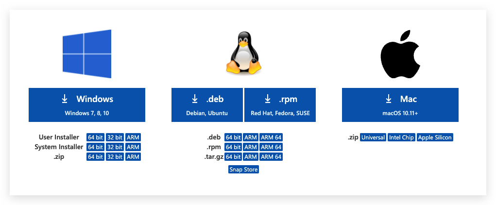
二、崭露锋芒：VS Code 快捷键
VS Code 用得熟不熟，首先就看你是否会用快捷键。以下列出的内容，都是常用快捷键，而加粗部分的快捷键，使用频率则非常高。
任何工具，掌握 20%的技能，足矣应对 80% 的工作。既然如此，你可能会问：那就只保留 20% 的特性，不久可以满足 80%的用户了吗？
但我想说的是：那从来都不是同样的 20%，每个人都会用到不同的功能。
掌握下面这些高频核心快捷键，你和你的工具，足矣露出锋芒。
1、工作区快捷键
| Mac 快捷键 | Win 快捷键 | 作用 | 备注 |
|---|---|---|---|
| Cmd + Shift + P | Ctrl + Shift + P，F1 | 显示命令面板 | |
| Cmd + B | Ctrl + B | 显示/隐藏侧边栏 | 很实用 |
Cmd + \ |
Ctrl + \ |
创建多个编辑器 | 【重要】抄代码利器 |
| Cmd + 1、2 | Ctrl + 1、2 | 聚焦到第 1、第 2 个编辑器 | 同上重要 |
| Cmd + +、Cmd + - | ctrl + +、ctrl + - | 将工作区放大/缩小（包括代码字体、左侧导航栏） | 在投影仪场景经常用到 |
| Cmd + J | Ctrl + J | 显示/隐藏控制台 | |
| Cmd + Shift + N | Ctrl + Shift + N | 重新开一个软件的窗口 | 很常用 |
| Cmd + Shift + W | Ctrl + Shift + W | 关闭软件的当前窗口 | |
| Cmd + N | Ctrl + N | 新建文件 | |
| Cmd + W | Ctrl + W | 关闭当前文件 |
2、跳转操作
| Mac 快捷键 | Win 快捷键 | 作用 | 备注 |
|---|---|---|---|
| Cmd + ` | 没有 | 在同一个软件的多个工作区之间切换 | 使用很频繁 |
| Cmd + Option + 左右方向键 | Ctrl + Pagedown/Pageup | 在已经打开的多个文件之间进行切换 | 非常实用 |
| Ctrl + Tab | Ctrl + Tab | 在已经打开的多个文件之间进行跳转 | 不如上面的快捷键快 |
| Cmd + Shift + O | Ctrl + shift + O | 在当前文件的各种方法之间进行跳转 | |
| Ctrl + G | Ctrl + G | 跳转到指定行 | |
Cmd+Shift+\ |
Ctrl+Shift+\ |
跳转到匹配的括号 |
3、移动光标
| Mac 快捷键 | Win 快捷键 | 作用 | 备注 |
|---|---|---|---|
| 方向键 | 方向键 | 在单个字符之间移动光标 | 大家都知道 |
| option + 左右方向键 | Ctrl + 左右方向键 | 在单词之间移动光标 | 很常用 |
| Cmd + 左右方向键 | Fn + 左右方向键 | 在整行之间移动光标 | 很常用 |
| Cmd + ← | Fn + ←（或 Win + ←） | 将光标定位到当前行的最左侧 | 很常用 |
| Cmd + → | Fn + →（或 Win + →） | 将光标定位到当前行的最右侧 | 很常用 |
| Cmd + ↑ | Ctrl + Home | 将光标定位到文章的第一行 | |
| Cmd + ↓ | Ctrl + End | 将光标定位到文章的最后一行 | |
| Cmd + Shift + \ | 在代码块之间移动光标 |
4、编辑操作
| Mac 快捷键 | Win 快捷键 | 作用 | 备注 |
|---|---|---|---|
| Cmd + C | Ctrl + C | 复制 | |
| Cmd + X | Ctrl + X | 剪切 | |
| Cmd + C | Ctrl + V | 粘贴 | |
| Cmd + Enter | Ctrl + Enter | 在当前行的下方新增一行，然后跳至该行 | 即使光标不在行尾，也能快速向下插入一行 |
| Cmd+Shift+Enter | Ctrl+Shift+Enter | 在当前行的上方新增一行，然后跳至该行 | 即使光标不在行尾，也能快速向上插入一行 |
| Option + ↑ | Alt + ↑ | 将代码向上移动 | 很常用 |
| Option + ↓ | Alt + ↓ | 将代码向下移动 | 很常用 |
| Option + Shift + ↑ | Alt + Shift + ↑ | 将代码向上复制一行 | |
| Option + Shift + ↓ | Alt + Shift + ↓ | 将代码向下复制一行 | 写重复代码的利器 |
另外再补充一点：将光标点击到某一行的任意位置时，默认就已经是选中全行了，此时可以直接复制或剪切，无需点击鼠标。这个非常实用，是所有的编辑操作中，使用得最频繁的。它可以有以下使用场景：
- 场景1：假设光标现在处于第5行的任意位置，那么，直接依次按下
Cmd + C和Cmd + V，就会把这行代码复制到第6行。继续按Cmd + C和Cmd + V，就会把这行代码复制到第7行。copy代码so easy。 - 场景2：假设光标现在处于第5行，那么，先按下
Cmd + C，然后按两下↑方向键，此时光标处于第3行；紧接着，继续按下Cmd + V，就会把刚刚那行代码复制到第3行，原本处于第3行的代码会整体下移。
你看到了没？上面的两个场景，我全程没有使用鼠标，只通过简单的复制粘贴和方向键，就做到了如此迅速的copy代码。你说是不是很高效？
5、多光标编辑
| Mac 快捷键 | Win 快捷键 | 作用 | 备注 |
|---|---|---|---|
| Cmd + Option + 上下键 | Ctrl + Alt + 上下键 | 在连续的多列上，同时出现光标 | |
| Option + 鼠标点击任意位置 | Alt + 鼠标点击任意位置 | 在任意位置，同时出现光标 | |
| Option + Shift + 鼠标拖动 | Alt + Shift + 鼠标拖动 | 在选中区域的每一行末尾，出现光标 | |
| Cmd + Shift + L | Ctrl + Shift + L | 在选中文本的所有相同内容处，出现光标 |
其他的多光标编辑操作：（很重要）
- 选中某个文本，然后反复按住快捷键「 Cmd + D 」键（windows 用户是按住「Ctrl + D」键）， 即可将全文中相同的词逐一加入选择。
- 选中一堆文本后，按住「Option + Shift + i」键（windows 用户是按住「Alt + Shift + I」键），既可在每一行的末尾都创建一个光标。
6、删除操作
| Mac 快捷键 | Win 快捷键 | 作用 | 备注 |
|---|---|---|---|
| Cmd + shift + K | Ctrl + Shift + K | 删除整行 | 「Cmd + X」的作用是剪切，但也可以删除整行 |
| option + Backspace | Ctrl + Backspace | 删除光标之前的一个单词 | 英文有效，很常用 |
| option + delete | Ctrl + delete | 删除光标之后的一个单词 | |
| Cmd + Backspace | 删除光标之前的整行内容 | 很常用 | |
| Cmd + delete | 删除光标之后的整行内容 |
备注：上面所讲到的移动光标、编辑操作、删除操作的快捷键，在其他编辑器里，大部分都适用。
7、编程语言相关
| Mac 快捷键 | Win 快捷键 | 作用 | 备注 |
|---|---|---|---|
| Cmd + / | Ctrl + / | 添加单行注释 | 很常用 |
| Option + Shift + F | Alt + shift + F | 代码格式化 | 很常用 |
| F2 | F2 | 以重构的方式进行重命名 | 改代码备 |
| Ctrl + J | 将多行代码合并为一行 | Win 用户可在命令面板搜索”合并行“ | |
| Cmd + | |||
| Cmd + U | Ctrl + U | 将光标的移动回退到上一个位置 | 撤销光标的移动和选择 |
8、搜索相关
| Mac 快捷键 | Win 快捷键 | 作用 | 备注 |
|---|---|---|---|
| Cmd + Shift + F | Ctrl + Shift +F | 全局搜索代码 | 很常用 |
| Cmd + P | Ctrl + P | 在当前的项目工程里，全局搜索文件名 | |
| Cmd + F | Ctrl + F | 在当前文件中搜索代码，光标在搜索框里 | |
| Cmd + G | F3 | 在当前文件中搜索代码，光标仍停留在编辑器里 | 很巧妙 |
9、自定义快捷键
按住快捷键「Cmd + Shift + P」，弹出命令面板，在命令面板中输入“快捷键”，可以进入快捷键的设置。
当然，你也可以选择菜单栏「偏好设置 –> 键盘快捷方式」，进入快捷键的设置：
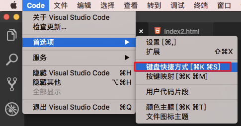
10、快捷键列表
你可以点击 VS Code 左下角的齿轮按钮，效果如下：

上图中，在展开的菜单中选择「键盘快捷方式」，就可以查看和修改所有的快捷键列表了：

快捷键参考链接
三、纵享丝滑：常见操作
1、快速生成HTML骨架
先新建一个空的html文件，然后通过以下方式，可以快速生成html骨架。
方式1：输入!，然后按下enter键，即可生成html骨架。如下图：
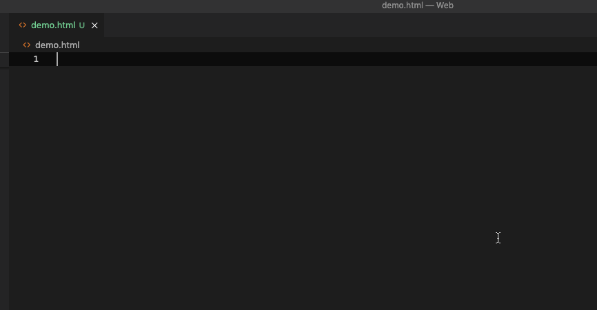
方式2：输入html:5，然后按住 Tab键，即可生成html骨架。
生成的骨架，内容如下：
1 |
|
有了上面的html骨架之后，我们就可以快乐地在里面插入CSS 代码和 JS 代码。
2、左右显示多个编辑器窗口（抄代码利器）
Mac 用户按住快捷键 Cmd + \， Windows 用户按住快捷键Ctrl + \，即可同时打开多个编辑器窗口。
按快捷键「Cmd + 1 」切换到左边的窗口，按快捷键「Cmd + 2 」切换到右边的窗口。随时随地，想切就切。
学会了这一招，以后抄代码的时候，leader 再也不用担心我抄得慢了，一天工资到手。
四、高端访问：命令面板的使用
Mac 用户按住快捷键 Cmd+Shift+P （Windows 用户按住快捷键Ctrl+Shift+P），可以打开命令面板。效果如下：
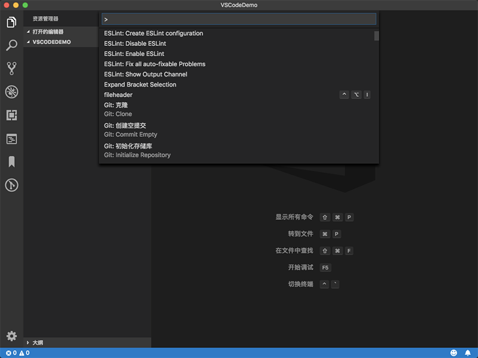
如果们需要修改一些设置项，可以通过「命令面板」来操作，效率会更高。这里列举一些。
1、VS Code 设置为中文语言
Mac 用户按住快捷键 Cmd+Shift+P （Windows 用户按住快捷键Ctrl+Shift+P），打开命令面板。
在命令面板中，输入Configure Display Language，选择Install additional languages，然后安装插件Chinese (Simplified) Language Pack for Visual Studio Code即可。
或者，我们可以直接安装插件Chinese (Simplified) Language Pack for Visual Studio Code，是一样的。
安装完成后，重启 VS Code。
2、设置字体大小
在命令面板输入“字体”，可以进行字体的设置，效果如下：
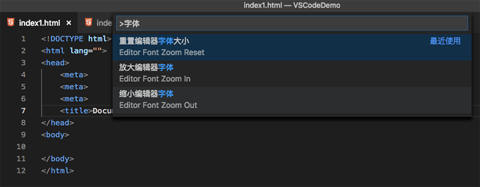
当然，你也可以在菜单栏，选择「首选项-设置-常用设置」，在这个设置项里修改字体大小。
3、快捷键设置
在命令面板输入“快捷键”，就可以进入快捷键的设置。
4、大小写转换
选中文本后，在命令面板中输入transfrom，就可以修改文本的大小写了。
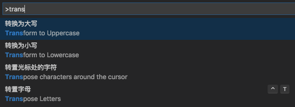
5、使用命令行启动 VS Code
（1）输入快捷键「Cmd + Shift + P 」，选择install code command：
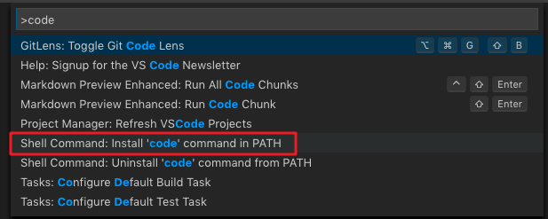
（2）使用命令行：
code命令：启动 VS Code 软件code pathName/fileName命令：通过 VS Code 软件打开指定目录/指定文件。
五、私人订制：VS Code 的常见配置
在修改 VS Code配置之前，我们需要知道，在哪里可以找到配置项的入口。
方式1：Mac用户选择菜单栏「Code–> 首选项–>设置」，即可打开配置项：
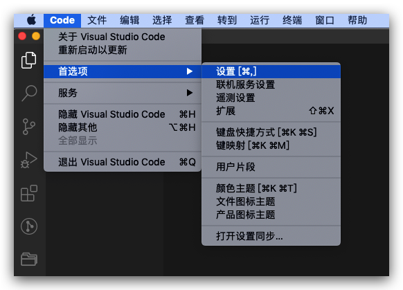
方式2：点击软件右下角的设置图标：
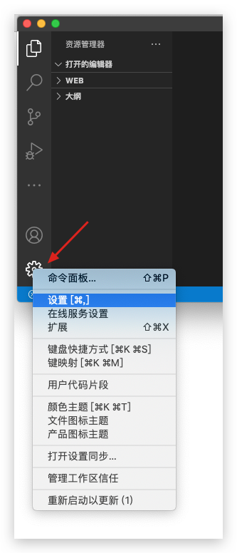
1、修改颜色主题
选择菜单栏「Code –> 首选项 –> 颜色主题」：
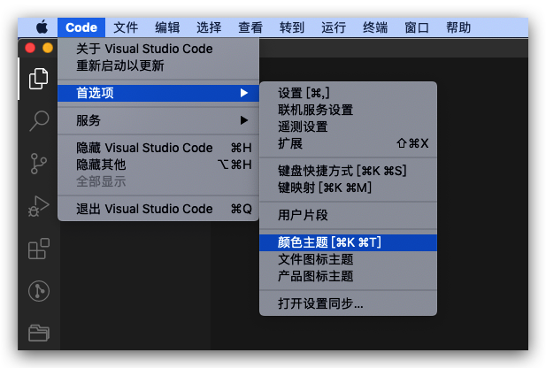
在弹出的对话框中，挑选你一个你喜欢的的颜色主题吧：
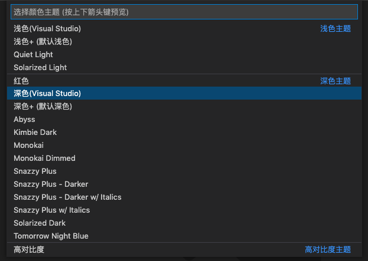
2、面包屑（Breadcrumb）
打开 VS Code 的设置项，选择「用户设置 -> 工作台 -> 导航路径」，如下图所示：
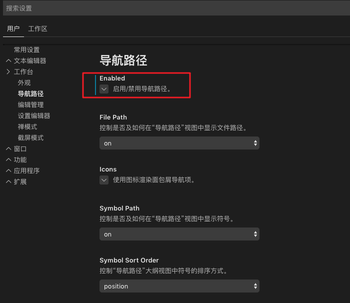
上图中，将红框部分打钩即可。
设置成功后，我们就可以查看到当前文件的「层级结构」，非常方便。如下图所示：
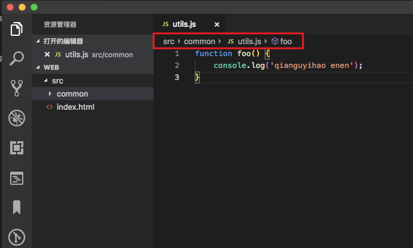
有了这个面包屑导航，我们可以点击它，在任意目录、任意文件之间随意跳转。
4、是否显示代码的行号
VS Code 默认显示代码的行号。你可以在设置项里搜索 editor.lineNumbers修改设置，配置项如下：
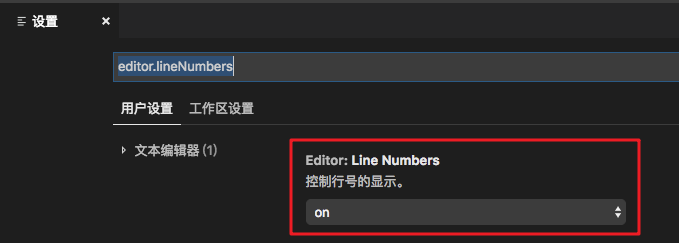
我建议保留这个设置项，无需修改。
5、右侧是否显示代码的缩略图
VS Code 会在代码的右侧，默认显示缩略图。你可以在设置项里搜索 editor.minimap进行设置，配置项如下：
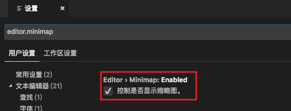
6、将当前行代码高亮显示（更改光标所在行的背景色）
当我们把光标放在某一行时，这一行的背景色并没有发生变化。如果想高亮显示当前行的代码，需要设置两步：
（1）在设置项里搜索editor.renderLineHighlight，将选项值设置为all或者line。
（2）在设置项里增加如下内容：
1 | "workbench.colorCustomizations": { |
上方代码，第一行代码的意思是：修改光标所在行的背景色（背景色设置为全黑，不透明度 90%）；第二行代码的意思是：修改光标所在行的边框色。
7、改完代码后立即自动保存
方式一：
改完代码后，默认不会自动保存。你可以在设置项里搜索files.autoSave，修改配置项如下：
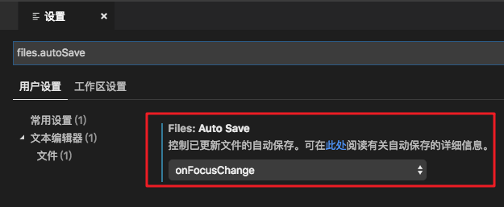
上图中，我们将配置项修改为onFocusChange之后，那么，当光标离开该文件后，这个文件就会自动保存了。非常方便。
方式二：
当然，你也可以直接在菜单栏选择「文件-自动保存」。勾选后，当你写完代码后，文件会立即实时保存。
8、保存代码后，是否立即格式化
保存代码后，默认不会立即进行代码的格式化。你可以在设置项里搜索editor.formatOnSave查看该配置项：
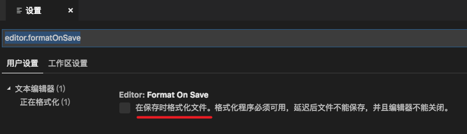
我觉得这个配置项保持默认就好，不用打钩。
9、空格 or 制表符
VS Code 会根据你所打开的文件来决定该使用空格还是制表。也就是说，如果你的项目中使用的都是制表符，那么，当你在写新的代码时，按下 tab 键后，编辑器就会识别成制表符。
常见的设置项如下：
- editor.detectIndentation：自动检测（默认开启）。截图如下：
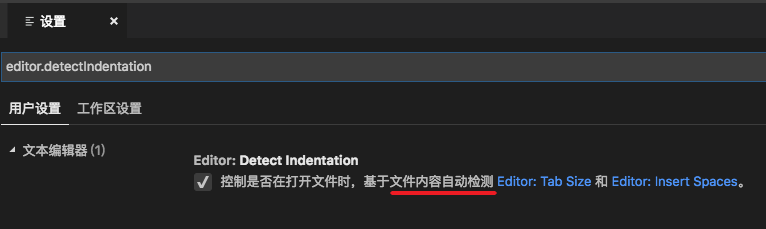
- editor.insertSpaces：按 Tab 键时插入空格（默认）。截图如下：
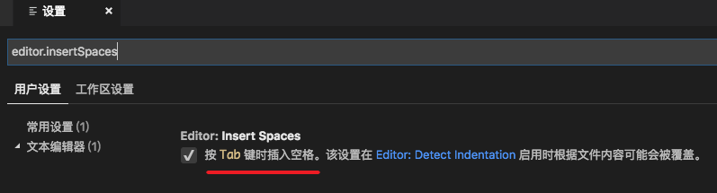
- editor.tabSize：一个制表符默认等于四个空格。截图如下：
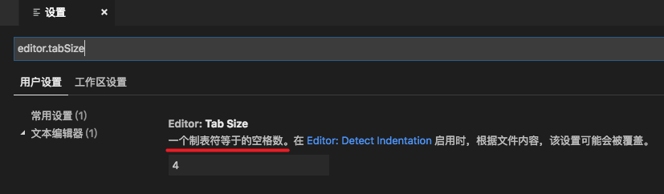
10、新建文件后的默认文件类型
当我们按下快捷键「Cmd + N」新建文件时，VS Code 默认无法识别这个文件到底是什么类型的，因此也就无法识别相应的语法高亮。
如果你想修改默认的文件类型，可以在设置项里搜索files.defaultLanguage，设置项如下：
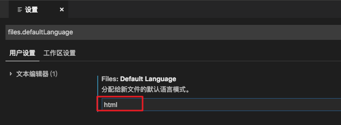
上图中的红框部分，填入你期望的默认文件类型。我填的是html类型，你也可以填写成 javascript 或者 markdown，或者其他的语言类型。
11、删除文件时，是否弹出确认框
当我们在 VS Code 中删除文件时，默认会弹出确认框。如果你想修改设置，可以在设置项里搜索xplorer.confirmDelete。截图如下：
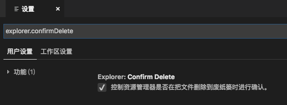
我建议这个设置项保持默认的打钩就好，不用修改。删除文件前的弹窗提示，也是为了安全考虑，万一手贱不小心删了呢？
接下来，我们来讲一些更高级的配置。
12、文件对比
VS Code 默认支持对比两个文件的内容。选中两个文件，然后右键选择「将已选项进行比较」即可，效果如下：

VS Code 自带的对比功能并不够强大，我们可以安装插件compareit，进行更丰富的对比。比如说，安装完插件compareit之后，我们可以将「当前文件」与「剪切板」里的内容进行对比：
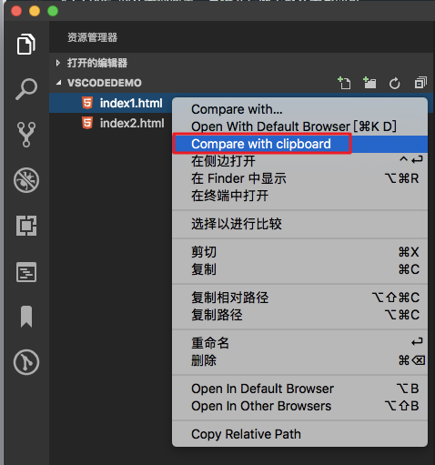
13、查找某个函数在哪些地方被调用了
比如我已经在a.js文件里调用了 foo()函数。那么，如果我想知道foo()函数在其他文件中是否也被调用了，该怎么做呢？
做法如下：在 a.js 文件里，选中foo()函数（或者将光标放置在foo()函数上），然后按住快捷键「Shift + F12」，就能看到 foo()函数在哪些地方被调用了，比较实用。
14、鼠标操作
- 在当前行的位置，鼠标三击，可以选中当前行。
- 用鼠标单击文件的行号，可以选中当前行。
- 在某个行号的位置，上下移动鼠标，可以选中多行。
15、重构
重构分很多种，我们来举几个例子。
命名重构：
当我们尝试去修改某个函数（或者变量名）时，我们可以把光标放在上面，然后按下「F2」键，那么，这个函数（或者变量名）出现的地方都会被修改。
方法重构：
选中某一段代码，这个时候，代码的左侧会出现一个「灯泡图标」，点击这个图标，就可以把这段代码提取为一个单独的函数。
16、在当前文件中搜索
在上面的快捷键列表中，我们已经知道如下快捷键：
- Cmd + F（Win 用户是 Ctrl + F）：在当前文件中搜索，光标在搜索框里
- Cmd + G（Win 用户是 F3）：在当前文件中搜索，光标仍停留在编辑器里
另外，你可能会注意到，搜索框里有很多按钮，每个按钮都对应着不同的功能，如下图所示：
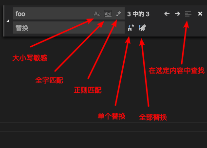
上图中，你可以通过「Tab」键和「Shift + Tab」键在输入框和替换框之间进行切换。
「在选定内容中查找」这个功能还是比较实用的。你也可以在设置项里搜索 editor.find.autoFindInSelection，勾选该设置项后，那么，当你选中指定内容后，然后按住「Cmd + F」，就可以自动只在这些内容里进行查找。该设置项如下图所示：
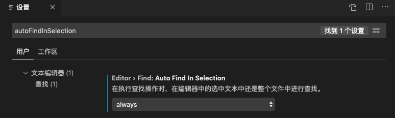
17、全局搜索
在上面的快捷键列表中，我们已经知道如下快捷键：
- Cmd + Shift + F（Win 用户是 Ctrl + Shift +F）：在全局的文件夹中进行搜索。效果如下：
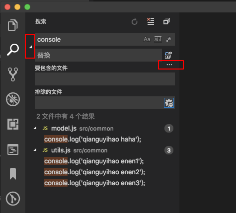
上图中，你可以点击红框部分，展开更多的配置项。
18、Git 版本管理
VS Code 自带了 Git 版本管理，如下图所示：
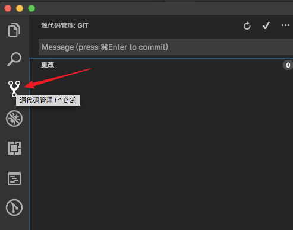
上图中，我们可以在这里进行常见的 git 命令操作。如果你还不熟悉 Git 版本管理，可以先去补补课。
与此同时，我建议安装插件GitLens，它是 VS Code 中我最推荐的一个插件，简直是 Git 神器，码农必备。
19、将工作区放大/缩小
我们在上面的设置项里修改字体大小后，仅仅只是修改了代码的字体大小。
如果你想要缩放整个工作区（包括代码的字体、左侧导航栏的字体等），可以按下快捷键「cmd +/-」。windows 用户是按下「ctrl +/-」
当我们在投影仪上给别人演示代码的时候，这一招十分管用。
如果你想恢复默认的工作区大小，可以在命令面板输入重置缩放（英文是reset zoom）
20、创建多层子文件夹
我们可以在新建文件夹的时候，如果直接输入aa/bb/cc，比如：
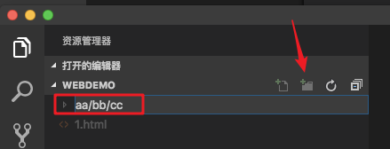
那么，就可以创建多层子文件夹，效果如下：
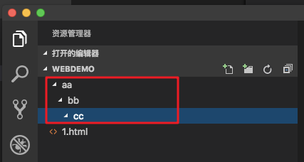
21、.vscode 文件夹的作用
为了统一团队的 vscode 配置，我们可以在项目的根目录下建立.vscode目录，在里面放置一些配置内容，比如：
settings.json：工作空间设置、代码格式化配置、插件配置。sftp.json：ftp 文件传输的配置。
.vscode目录里的配置只针对当前项目范围内生效。将.vscode提交到代码仓库，大家统一配置时，会非常方便。
22、自带终端
我们可以按下「Ctrl + `」打开 VS Code 自带的终端。我认为内置终端并没有那么好用，我更建议你使用第三方的终端 item2。
23、markdown 语法支持
VS Code 自带 markdown 语法高亮。也就是说，如果你是用 markdown 格式写文章，则完全可以用 VS Code 进行写作。
写完 md 文件之后，你可以点击右上角的按钮进行预览，如下图所示：
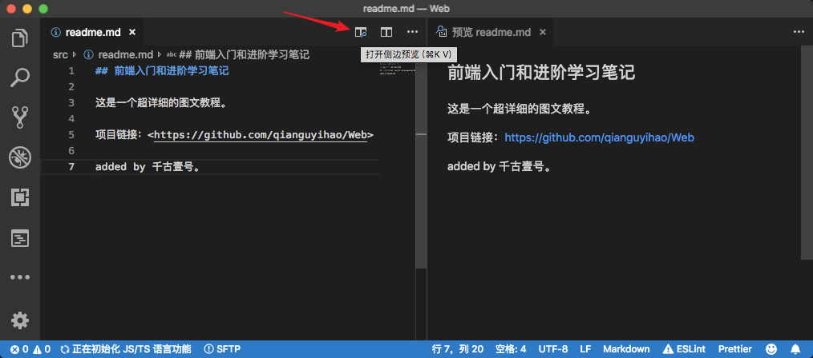
我一般是安装「Markdown Preview Github Styling」插件，以 GitHub 风格预览 Markdown 样式。样式十分简洁美观。
你也可以在控制面板输入Markdown: 打开预览，直接全屏预览 markdown 文件。
24、Emmet in VS Code
Emmet可以极大的提高 html 和 css 的编写效率，它提供了一种非常简练的语法规则。
举个例子，我们在编辑器中输入缩写代码：ul>li*6 ，然后按下 Tab 键，即可得到如下代码片段：
1 | <ul> |
VS Code 默认支持 Emmet。更多 Emmet 语法规则，请自行查阅。
25、修改字体，使用「Fira Code」字体
这款字体很漂亮，很适合用来写代码：

安装步骤如下：
（1）进入 https://github.com/tonsky/FiraCode 网站，下载并安装「Fira Code」字体。
（2）打开 VS Code 的「设置」，搜索font，修改相关配置为如下内容：
1 | "editor.fontFamily": "'Fira Code',Menlo, Monaco, 'Courier New', monospace", // 设置字体显示 |
上方的第二行配置，取决于个人习惯，我是直接设置为"editor.fontLigatures": null，因为我不太习惯连字。
26、代码格式化：Prettier
我们可以使用 Prettier进行代码格式化，会让代码的展示更加美观。步骤如下：
（1）安装插件 Prettier。
（2）在项目的根路径下，新建文件.prettierrc，并在文件中添加如下内容：
1 | { |
上面的内容，是我自己的配置，你可以参考。
更多配置，可以参考官方文档：https://prettier.io/docs/en/options.html
27、文件传输：sftp
如果你需要将本地文件通过 ftp 的形式上传到局域网的服务器，可以安装sftp这个插件，很好用。在公司会经常用到。
步骤如下：
（1）安装插件sftp。
（2）配置 sftp.json文件。 插件安装完成后，输入快捷键「cmd+shift+P」弹出命令面板，然后输入sftp:config，回车，当前工程的.vscode文件夹下就会自动生成一个sftp.json文件，我们需要在这个文件里配置的内容可以是：
host：服务器的 IP 地址username：用户名privateKeyPath：存放在本地的已配置好的用于登录工作站的密钥文件（也可以是 ppk 文件）remotePath：工作站上与本地工程同步的文件夹路径，需要和本地工程文件根目录同名，且在使用 sftp 上传文件之前，要手动在工作站上 mkdir 生成这个根目录ignore：指定在使用 sftp: sync to remote 的时候忽略的文件及文件夹，注意每一行后面有逗号，最后一行没有逗号
举例如下：(注意，其中的注释需要去掉)
1 | { |
（3）在 VS Code 的当前文件里，选择「右键 -> upload」，就可以将本地的代码上传到 指定的 ftp 服务器上（也就是在上方 host 中配置的服务器 ip）。
我们还可以选择「右键 -> Diff with Remote」，就可以将本地的代码和 ftp 服务器上的代码做对比。
28、设置tab的缩进
在配置里搜索Detect Indentation，修改为false。参考链接：https://www.yisu.com/zixun/327399.html
六、三头六臂：VS Code 插件推荐
VS Code 有一个很强大的功能就是支持插件扩展，让你的编辑器仿佛拥有了三头六臂。
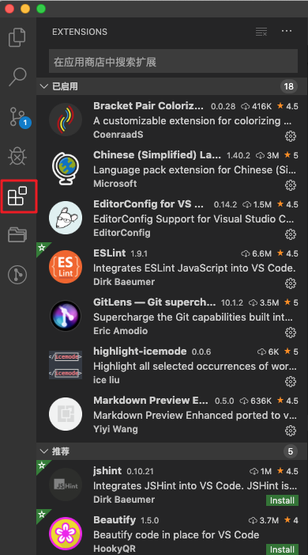
上图中，点击红框部分，即可在输入框里，查找你想要的插件名，然后进行安装。
我来列举几个常见的插件，这些插件都很实用。注意：顺序越靠前，越实用。
1、GitLens 【荐】
我强烈建议你安装插件GitLens，它是 VS Code 中我最推荐的一个插件，简直是 Git 神器，码农必备。如果你不知道，那真是 out 了。
GitLens 在 Git 管理上有很多强大的功能，比如：
- 将光标放置在代码的当前行，可以看到这样代码的提交者是谁，以及提交时间。这一点，是 GitLens 最便捷的功能。
- 查看某个 commit 的代码改动记录
- 查看不同的分支
- 可以将两个 commit 进行代码对比
- 甚至可以将两个 branch 分支进行整体的代码对比。这一点，简直是 GitLens 最强大的功能。当我们在不同分支 review 代码的时候，就可以用到这一招。
打开你的 Git仓库，未安装 GitLens 时是这样的：
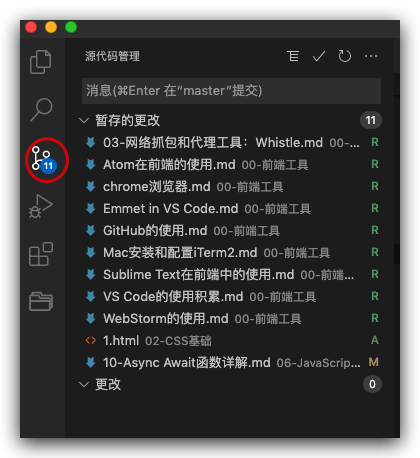
安装了 GitLens 之后是这样的：
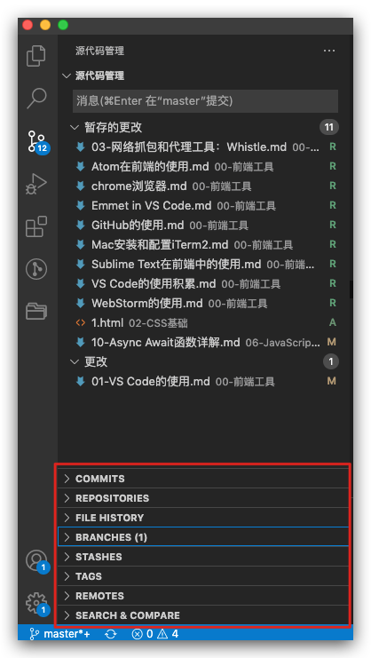
上图中，红框部分就是 GitLens 的功能，诸君可以自由发挥。
2、Git History
有些同学习惯使用编辑器中的 Git 管理工具，而不太喜欢要打开另外一个 Git UI 工具的同学，这一款插件满足你查询所有 Git 记录的需求。
3、Live Server 【荐】
在本地启动一个服务器，代码写完后可以实现「热更新」，实时地在网页中看到运行效果。就不需要每次都得手动刷新页面了。
使用方式：安装插件后，开始写代码；代码写完后，右键选择「Open with Live Server」。
4、Chinese (Simplified) Language Pack for Visual Studio Code
让软件显示为简体中文语言。
5、Bracket Pair Colorizer 2：突出显示成对的括号【荐】
Bracket Pair Colorizer 2插件：以不同颜色显示成对的括号，并用连线标注括号范围。简称彩虹括号。
另外，还有个Rainbow Brackets插件，也可以突出显示成对的括号。
6、sftp：文件传输 【荐】
如果你需要将本地文件通过 ftp 的形式上传到局域网的服务器，可以安装sftp这个插件，很好用。在公司会经常用到。
详细配置已经在上面讲过。
7、open in browser
安装open in browser插件后，在 HTML 文件中「右键选择 –> Open in Default Browser」，即可在浏览器中预览网页。
8、highlight-icemode：选中相同的代码时，让高亮显示更加明显【荐】
VSCode 自带的高亮显示，实在是不够显眼。用插件支持一下吧。
所用了这个插件之后，VS Code 自带的高亮就可以关掉了：
在用户设置里添加"editor.selectionHighlight": false即可。
参考链接：vscode 选中后相同内容高亮插件推荐
9、vscode-icons
vscode-icons 会根据文件的后缀名来显示不同的图标，让你更直观地知道每种文件是什么类型的。
10、Project Manager
工作中，我们经常会来回切换多个项目，每次都要找到对应项目的目录再打开，比较麻烦。Project Manager 插件可以解决这样的烦恼，它提供了专门的视图来展示你的项目，我们可以把常用的项目保存在这里，需要时一键切换，十分方便。
11、TODO Highlight
写代码过程中，突然发现一个 Bug，但是又不想停下来手中的活，以免打断思路，怎么办？按照代码规范，我们一般是在代码中加个 TODO 注释。比如：（注意，一定要写成大写TODO，而不是小写的todo）
1 | //TODO:这里有个bug，我一会儿再收拾你 |
或者：
1 | //FIXME:我也不知道为啥， but it works only that way. |
安装了插件 TODO Highlight之后，按住「Cmd + Shift + P」打开命令面板，输入「Todohighlist」，选择相关的命令，我们就可以看到一个 todoList 的清单。
12、WakaTime 【荐】
统计在 VS Code 里写代码的时间。统计效果如下：

13、Code Time
Code Time插件：记录编程时间，统计代码行数。
安装该插件后，VS Code 底部的状态栏右下角可以看到时间统计。点击那个位置之后，选择「Code Time Dashboard」，即可查看统计结果。
备注：团长试了一下这个 code time 插件，发现统计结果不是很准。
14、Markdown Preview Github Styling 【荐】
以 GitHub 风格预览 Markdown 样式，十分简洁优雅。就像下面这样，左侧书写 Markdown 文本，右侧预览 Markdown 的渲染效果：

15、Markdown Preview Enhanced
预览 Markdown 样式。
Markdown All in One
这个插件将帮助你更高效地在 Markdown 中编写文档。
16、Settings Sync
- 地址：https://github.com/shanalikhan/code-settings-sync
- 作用：多台设备之间，同步 VS Code 配置。通过登录 GitHub 账号来使用这个同步工具。
同步的详细操作，下一段会讲。
另外，北京时间的2020年8月14日，微软发布 Visual Studio Code 1.48 稳定版。此版本原生支持用户同步 VS Code的配置，只需要登录微软账号或者 GitHub账号即可。
17、vscode-syncing
- 地址：https://github.com/nonoroazoro/vscode-syncing
- 作用：多台设备之间，同步 VS Code 配置。
18、Vetur
Vue 多功能集成插件，包括：语法高亮，智能提示，emmet，错误提示，格式化，自动补全，debugger。VS Code 官方钦定 Vue 插件，Vue 开发者必备。
19、ES7 React/Redux/GraphQL/React-Native snippets
React/Redux/react-router 的语法智能提示。
20、minapp：小程序支持
小程序开发必备插件。
21、Prettier：代码格式化
Prettier 是一个代码格式化工具，只关注格式化，但不具备校验功能。在一个多人协同开发的团队中，统一的代码编写规范非常重要。一套规范可以让我们编写的代码达到一致的风格，提高代码的可读性和统一性。自然维护性也会有所提高。
22、ESLint：代码格式校验
日常开发中，建议用可以用 Prettier 做代码格式化，然后用 eslint 做校验。
23、Beautify
代码格式化工具。
备注：相比之下，Prettier 是当前最流行的代码格式化工具，比 Beautify 用得更多。
24、JavaScript(ES6) code snippets
ES6 语法智能提示，支持快速输入。
25、Search node_modules 【荐】
node_modules模块里面的文件夹和模块实在是太多了，根本不好找。好在安装 Search node_modules 这个插件后，输入快捷键「Cmd + Shift + P」，然后输入 node_modules，在弹出的选项中选择 Search node_modules，即可搜索 node_modules 里的模块。
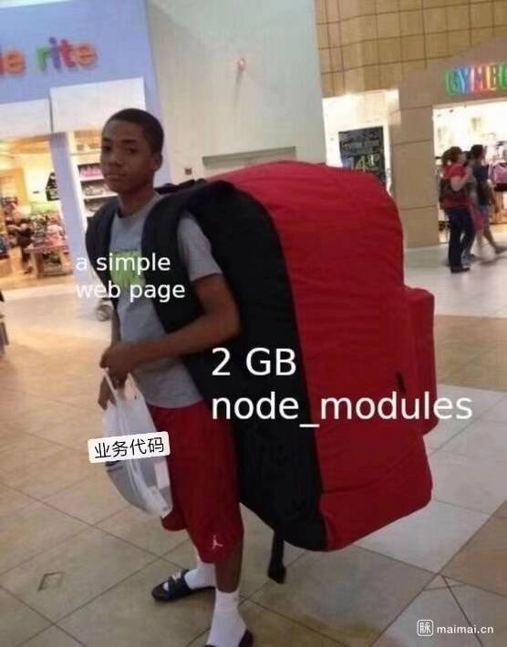
26、indent-rainbow：突出显示代码缩进
indent-rainbow插件：突出显示代码缩进。
安装完成后，效果如下图所示：
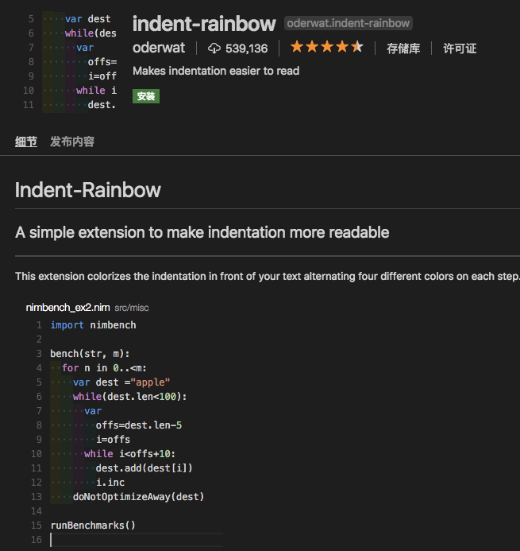
27、javascript console utils：快速打印 log 日志【荐】
安装这个插件后，当我们按住快捷键「Cmd + Shift + L」后，即可自动出现日志 console.log()。简直是日志党福音。
当我们选中某个变量 name，然后按住快捷键「Cmd + Shift + L」，即可自动出现这个变量的日志 console.log(name)。
其他的同类插件还有：Turbo Console Log。
不过，生产环境的代码，还是尽量少打日志比较好，避免出现一些异常。
编程有三等境界：
- 第三等境界是打日志，这是最简单、便捷的方式，略显低级，一般新手或资深程序员偷懒时会用。
- 第二等境界是断点调试，在前端、Java、PHP、iOS 开发时非常常用，通过断点调试可以很直观地跟踪代码执行逻辑、调用栈、变量等，是非常实用的技巧。
- 第一等境界是测试驱动开发，在写代码之前先写测试。与第二等的断点调试刚好相反，大部分人不是很习惯这种方式，但在国外开发者或者敏捷爱好者看来，这是最高效的开发方式，在保证代码质量、重构等方面非常有帮助，是现代编程开发必不可少的一部分。
28、Code Spell Checker：单词拼写错误检查
这个拼写检查程序的目标是帮助捕获常见的单词拼写错误，可以检测驼峰命名。从此告别 Chinglish.
29、Local History 【荐】
维护文件的本地历史记录，强烈建议安装。代码意外丢失时，有时可以救命。
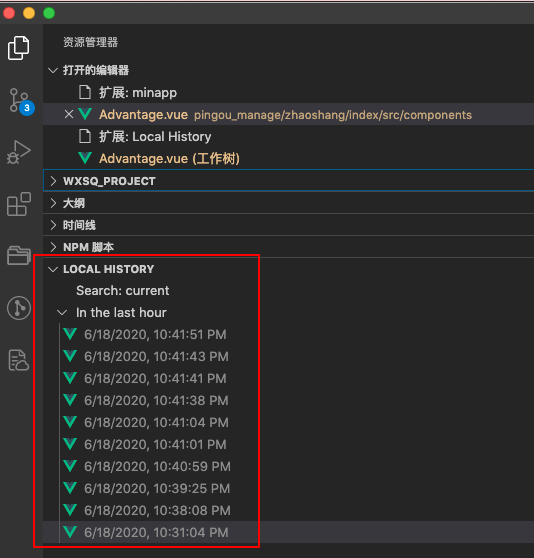
30、Polacode-2020：生成代码截图 【荐】
可以把代码片段保存成美观的图片，主题不同，代码的配色方案也不同，也也可以自定义设置图片的边框颜色、大小、阴影。
尤其是在我们做 PPT 分享时需要用到代码片段时，或者需要在网络上优雅地分享代码片段时，这一招很有用。
生成的效果如下：

其他同类插件：CodeSnap。我们也可以通过 https://carbon.now.sh/这个网站生成代码图片
有人可能会说：直接用 QQ 截图不行吗？可以是可以，但不够美观、不够干净。
31、Image Preview 【荐】
图片预览。鼠标移动到图片 url 上的时候，会自动显示图片的预览和图片尺寸。
32、Auto Close Tag、Auto Rename Tag
自动闭合标签、自动对标签重命名。
33、Better Comments
为注释添加更醒目、带分类的色彩。
34、CSS Peek
增强 HTML 和 CSS 之间的关联，快速查看该元素上的 CSS 样式。
35、Vue CSS Peek
CSS Peek 对 Vue 没有支持，该插件提供了对 Vue 文件的支持。
36、Color Info
这个便捷的插件，将为你提供你在 CSS 中使用颜色的相关信息。你只需在颜色上悬停光标，就可以预览色块中色彩模型的（HEX、 RGB、HSL 和 CMYK）相关信息了。
37、RemoteHub
不要惊讶，RemoteHub 和 GitLens 是同一个作者开发出来的。
RemoteHub插件的作用是：可以在本地查看 GitHub 网站上的代码，而不需要将代码下载到本地。
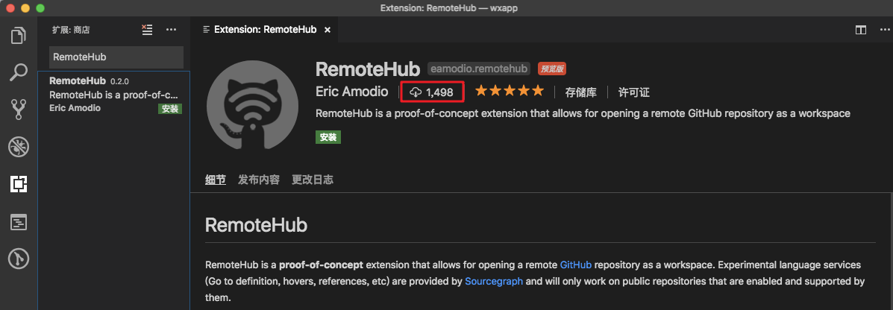
这个插件目前使用的人还不多，赶紧安装起来尝尝鲜吧。
38、Live Share：实时编码分享
Live Share这个神奇的插件是由微软官方出品，它的作用是：实时编码分享。也就是说，它可以实现你和你的同伴一起写代码。这绝对就是结对编程的神器啊。
安装方式：
打开插件管理，搜索“live share”，安装。安装后重启 VS Code，在左侧会多出一个按钮：
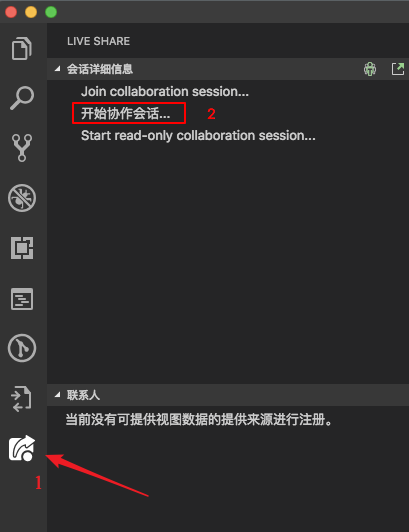
上图中，点击红框部分，登录后就可以分享你的工作空间了。
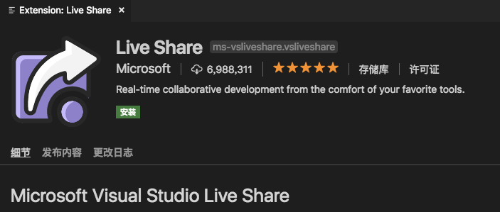
39、Import Cost
在项目开发过程中，我们会引入很多 npm 包，有时候可能只用到了某个包里的一个方法，却引入了整个包，导致代码体积增大很多。Import Cost插件可以在代码中友好的提示我们，当前引入的包会增加多少体积，这很有助于帮我们优化代码的体积。
Paste JSON as Code
此插件可以将剪贴板中的 JSON 字符串转换成工作代码。支持多种语言。
七、无缝切换：VS Code 配置云同步
我们可以将配置云同步，这样的话，当我们换个电脑时，即可将配置一键同步到本地，就不需要重新安装插件了，也不需要重新配置软件。
下面讲的两个同步方法，都可以，看你自己需要。方法1是 VS Code自带的同步功能，操作简单。方法2 需要安装插件，支持更多的自定义配置。
方法1：使用 VS Code 自带的同步功能
1、配置同步：
（1）在菜单栏选择「 Code –> 首选项 –> 打开设置同步」：
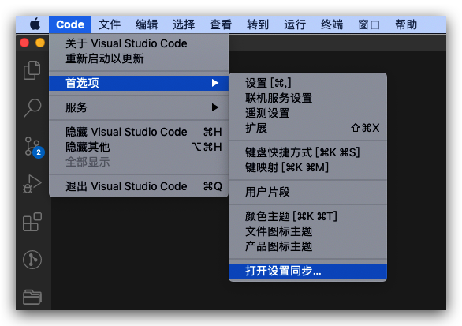
（2）选择需要同步的配置：
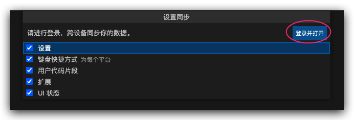
（3）通过Microsoft或者GitHub账号登录。 上图中，点击“登录并打开”，然后弹出如下界面：
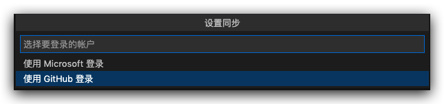
上图中，使用 微软账号或者 GitHub账号登录：
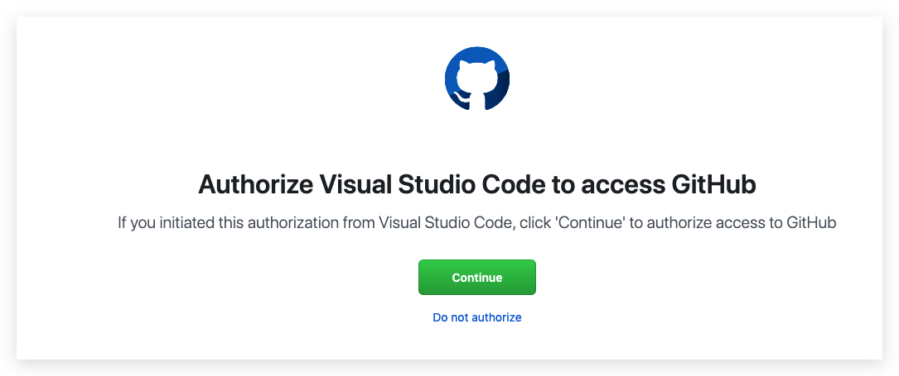
（4）同步完成后，菜单栏会显示“首先项同步已打开”，最左侧也会多出一个同步图标，如下图所示：
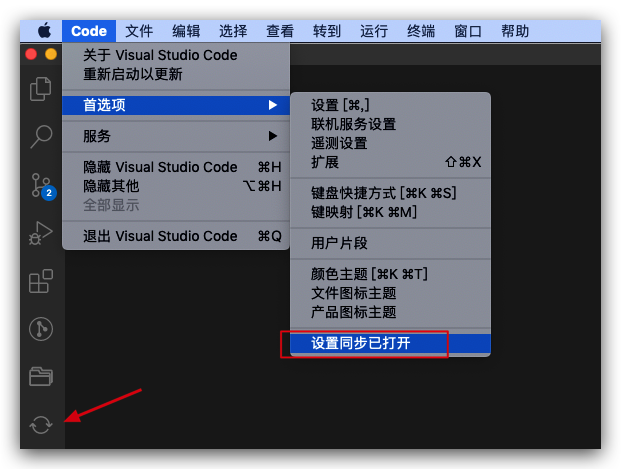
2、管理同步：
（1）点击菜单栏「Code –> 首选项 –> 设置同步已打开」，会弹出如下界面，进行相应的同步管理即可：

（2）换另外一个电脑时，登录相同的账号，即可完成同步。
参考链接：
方法2：使用插件 settings-sync
使用方法2，我们还可以把配置分享其他用户，也可以把其他用户的配置给自己用。
1、配置同步：（将自己本地的配置云同步到 GitHub）
（1）安装插件 settings-sync。
（2）安装完插件后，在插件里使用 GitHub 账号登录。
（3）登录后在 vscode 的界面中，可以选择一个别人的 gist；也可以忽略掉，然后创建一个属于自己的 gist。
（4）使用快捷键 「Command + Shift + P」，在弹出的命令框中输入 sync，并选择「更新/上传配置」，这样就可以把最新的配置上传到 GitHub。
2、管理同步：（换另外一个电脑时，从云端同步配置到本地）
（1）当我们换另外一台电脑时，可以先在 VS Code 中安装 settings-sync 插件。
（2）安装完插件后，在插件里使用 GitHub 账号登录。
（3）登录之后，插件的界面上，会自动出现之前的同步记录：

上图中，我们点击最新的那条记录，就可将云端的最新配置同步到本地：

如果你远程的配置没有成功同步到本地，那可能是网络的问题，此时，可以使用快捷键 「Command + Shift + P」，在弹出的命令框中输入 sync，并选择「下载配置」，多试几次。
使用其他人的配置：
如果我们想使用别人的配置，首先需要对方提供给你 gist。具体步骤如下：
（1）安装插件 settings-sync。
（2）使用快捷键 「Command + Shift + P」，在弹出的命令框中输入 sync，并选择「下载配置」
（3）在弹出的界面中，选择「Download Public Gist」，然后输入别人分享给你的 gist。注意，这一步不需要登录 GitHub 账号。
八、常见主题插件
给你的 VS Code 换个皮肤吧，免费的那种。
- Dracula Theme
- Material Theme
- Nebula Theme
- One Dark Pro
- One Monokai Theme
- Monokai Pro
- Ayu
- Snazzy Plus
- Dainty
SynthWave '84- GitHub Plus Theme：白色主题
- Horizon Theme：红色主题
最后一段
如果你还有什么推荐的 VS Code 插件，欢迎留言。
大家完全不用担心这篇文章会过时，随着 VS Code 的版本更新和插件更新，本文也会随之更新。关于 VS Code 内容的后续更新，你可以关注我在 GitHub 上的前端入门项目，项目地址是：
一个超级详细和真诚的前端入门项目。